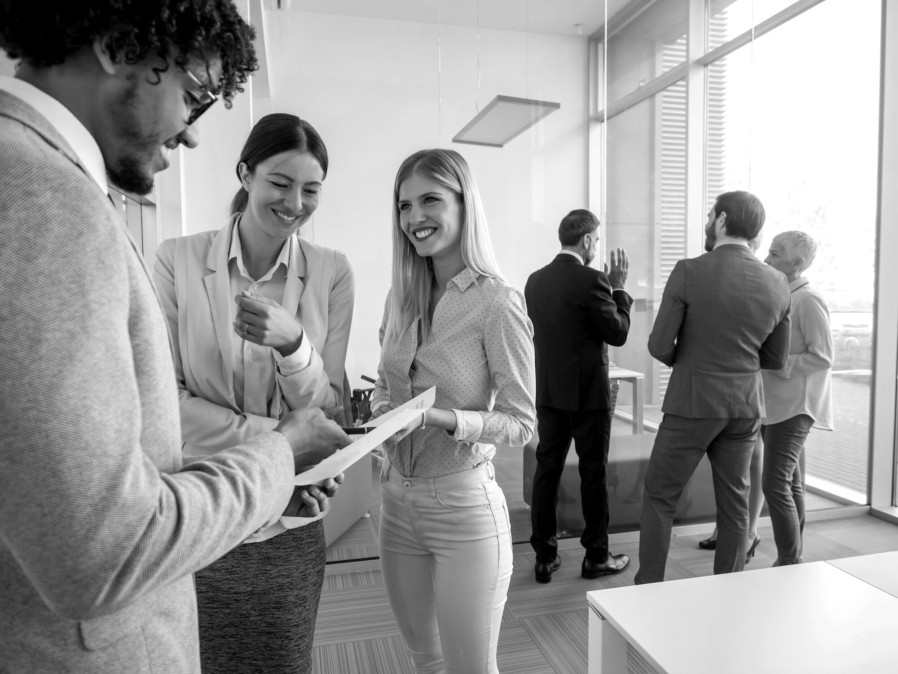

Pas de couleur. Du noir, du blanc, beaucoup de respiration. Toute la marque tient dans une seule typographie, une photographie sobre et la précision des espaces. Un minimalisme intégral, à la hauteur d'une exigence patrimoniale.

MP Finance · l'accompagnement avant toutFig. 00 — Photographie de marque
Référence
milimalis.comépure éditoriale
Typographie
Golos Textune seule famille
Couleur
Aucunenoir & blanc intégral
Matière
Pierre de Jaumonttexture désaturée
02 — Identité
Logo & signature
Logo inchangé. La distinction des entités passe par la tagline — jamais par un second logo, ni par une couleur.
Version inversée · fond foncé / photographieLockup principal
Version principale · fond clair
Taille réduite · ≥ 28 mm / 96 px
Particuliers
Entité grand public. Tagline orientée accompagnement : crédit immobilier, rachat, assurance, gestion de patrimoine.
PRO
Professionnels & entreprises
Même logo, même filet. Seules la mention « Pro » et la tagline changent. Une marque, deux adresses.
Zone de protection & taille minimale
Espace vide minimum autour du logo = hauteur de la lettre « M ». Taille minimale d'impression : 28 mm de large pour préserver la lisibilité. Jamais de déformation, de rotation, ni d'effet.
03 — Couleur
Noir, blanc, nuances.
Une échelle de gris, rien d'autre. Le contraste et le vide font tout le travail.
#0E0E0E
#2A2A28
#4A4A47
#7C7C77
#9B9B95
#C7C4BC
#E3E0D8
#F7F5EF
Aucune couleur d'accent. Le papier est un blanc cassé chaud qui adoucit l'écran comme le print. L'encre n'est pas un noir pur, pour un rendu plus doux et plus haut de gamme. Les gris structurent l'information ; le vide structure la page.
Encre — texte, aplats, logo Gris 400–600 — méta, légendes, filets Papier — fond par défaut, respiration
04 — Typographie
Golos Text, seule en scène.
Une seule famille. Toute la hiérarchie naît de la graisse, de l'échelle et de la casse — jamais d'une 2ᵉ police.
Display
Golos 800 72–142 px · −5,5 %
Votre projet mérite mieux.
Titre
Golos 700 40–52 px · −3,5 %
Un partenaire, pas un guichet.
Chapô
Golos 300 26–28 px · 1.4
Le conseil patrimonial à hauteur d'exigence, porté par un réseau de courtiers indépendants.
Corps
Golos 400 16–18 px · 1.75
MP Finance accompagne particuliers et professionnels sur l'ensemble de leurs projets de financement. De la première acquisition à la stratégie patrimoniale, chaque dossier est traité avec la même rigueur.
Label
Golos 600 13–14 px · +28 %
Courtage · Patrimoine · Assurance
05 — Photographie
Noir & blanc, lumineux.
L'humain et les lieux de travail, lumière naturelle, peu de contraste. Désaturation totale, toujours.
Espaces · lumière
Équipe · proximité
Détail · conseil
Des visages, des bureaux, des gestes de conseil — la marque incarne l'accompagnement, pas l'abstraction financière. Tirage noir & blanc doux : hautes lumières préservées, noirs jamais bouchés, grain léger. Photographies réelles MP Finance, retraitées en N&B.
06 — Matière
Pierre de Jaumont.
La seule matière de la marque : la pierre, désaturée. Aucune teinte dorée — uniquement la trame et le relief, en niveaux de gris.
Pierre claire
Fonds · papiers · encarts
Pierre profonde
Couvertures · aplats sombres
La pierre de Jaumont — celle de la cathédrale de Metz — ancre la marque dans son territoire. On en retient la trame et le grain, jamais la couleur : la texture est systématiquement désaturée et déclinée en niveaux de gris. Employée par petites touches, en basse opacité, comme une matière — pas comme un décor.
07 — Système
Formes & espacements.
L'écran s'arrondit, le papier reste net. Et partout : de l'air.
Digital — coins arrondis
Web, app, posts sociaux, signatures mail. Rayons doux pour une lecture moderne et accessible à l'écran.
rayon 12–16 px · boutons pilule
Print — angles vifs
Plaquettes, flyers, cartes, pochettes. Angles nets, marges généreuses, tenue éditoriale haut de gamme.
rayon 0 · filets 0,5 pt
8
16
24
40
64
96
Échelle d'espacement · base 8
Tous les espacements sont des multiples de 8. Les marges sont volontairement larges : le vide n'est pas de la place perdue, c'est le premier signe du haut de gamme. On préfère toujours retirer que remplir.